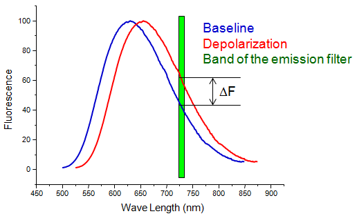
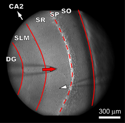
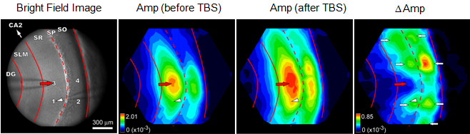
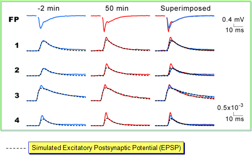
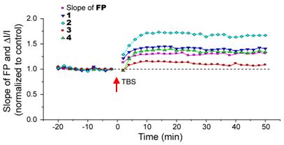
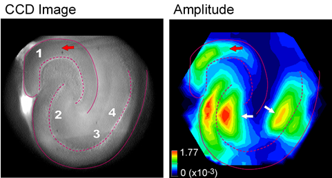
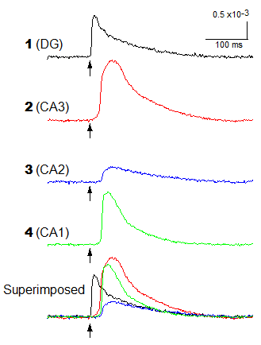
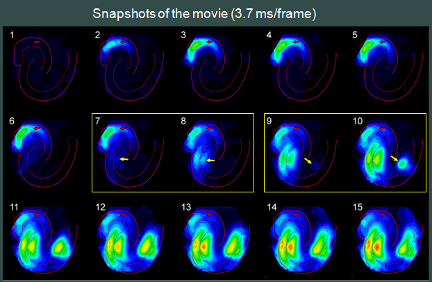

Because of the nervous system, we can see, hear, smell, taste, feel, think, learn and act. Our brains keep processing a huge amount of information, even when we are sleeping. It is amazing how the brains calculate, make the decision, and send the commands to other parts of our bodies.
Neurons are the fundamental unites in the nervous system. I am interested in studying how a neuron and a group of neurons process signals, store information, and function as a part of the nervous system.
Specifically, my research aims to reveal mechanisms underlying the normal functions and disease states of the hippocampus. To this end, I have conducted research spanning the levels of dendrites, neurons, neural networks, and animal behaviors, while maintaining a strong relevance to the neuropathic and psychological conditions of the hippocampus. In the past, I have studied the spatial patterns of long-term potentiation and the propagation of epileptic activities in the hippocampus. Currently, my research focuses on two projects: (1) the unique role of dendritic Kv1.1 channels in signal processing and (2) enhanced hippocampal network activities in viral siRNA manipulated animals, which display vigorous anxiolytic- and antidepressant-like behaviors. I have used multiple imaging and electrophysiological techniques to examine the physiological and pathological conditions of the hippocampus. I believe that research focusing on these conditions with multiple techniques at different levels will clarify the mechanisms and guide the development of better treatments.
The hippocampus [Wikipedia link] is a brain structure essential for learning, memory, and navigation. It is one of the main structures damaged in Alzheimer's disease. Neuropathic changes in the hippocampus can also lead to epilepsy and affective mood disorders, such as anxiety disorders and depression disorders. There are five major regions in a hippocampal slice, which are listed bellow.
There are several subregions labeled on the right.
The CA1 region is a model area to study synaptic properties because of two technical reasons. First, the field potential recording technique was the major method to study synaptic transmission in the past. Second, the apical dendrites of the CA1 pyramidal neurons are uniformly arranged, making the interpretation of the field potential signals cleaner and straightforward. Due to this technical advantage, the CA1 region is one of the most well known areas in the mammalian brain.
Following field potential recording, the sharp electrode recording and the whole cell patch-clamp recording were developed to monitor the intracellular membrane potential of individual cells. The whole cell patch-clamp recording technique is especially useful when scientists need to control local membrane potential or to evoke action potentials by current injection. Again, the CA1 pyramidal neurons were the choice of neuron models due to the relative homogeneous intrinsic properties and the better known synaptic properties. Another advantage is that their cell bodies were located in a thin layer, making it easiert to find healthy neurons under a microscope.
|

This figure depicts that the fluorescence spectrum of a voltage-sensitive dye is
shifted to the right when the membrane potential is depolarized (from blue to red).
If the fluorescence light passing a band-pass filter (green) is collected, an increase
in the light intensity will be observed (ΔF).
|
Voltage-sensitive dyes are chemicals, which can diffuse to the plasma membrane and change their optical properties in response to membrane potential change. There are two basic types of voltage-sensitive dyes: absorbance dyes and fluorescence dyes. The absorbance spectra and/or the fluorescence spectra of these dyes are altered when the strength and/or the polarity of the local electric field changes. By exciting the dyes and collecting transmitted/fluorescence light through a band-pass filter, the change in the light intensity reflects the change in the membrane potential. Within the physiological range of membrane potential, the relation between the membrane potential change and the light intensity change is quite linear. However, the change in light intensity is usually very small. There is generally 0.1 to 1 % change in light intensity in response to an action potential. Therefore, it is usually necessary to repeat the experiment a few times and calculate the averge to get a better signal to noise ratio. In addition, analog/digital temporal or spatial filters are often used to improve the quality of the signals.
Using voltage-sensitive dyes to image membrane potential change is called voltage-sensitive dye imaging, or voltage imaging in short. It is a very powerful tool to study spatiotemporal characteristics of membrane potential change in single cells or in a brain slice. To study membrane potential change in different compartments of a neuron, the dye is ofter added to the internal solution to stain one neuron with the whole-cell patch clamp technique. To study ensemble membrane potential change at the neural network level, the whole slice is usually stained and activity is evoked by electrical stimulation.
| Imaging Membrane Potential Change in The Hippocampal CA1 Region | |
|
Bright Feld Image of The CA1 Region  |
Movie of The Response to Electrical Stimulation |
|
This hippocampal slice was stained with voltage sensitive dye. The left is a bright
field image. The red arrow indicates the tip of the stimulating electrode. The white
arrow head points to the tip of the field potential recording electrode.
The right is a movie displaying the response evoked by an electrical pulse. The
interval between two frames is 1 ms.
SO (Stratum Oriens); SP (Stratum Pyramidale); SR (Stratum Radiatum); SLM ( Stratum
Locunosum-Moleculare); DG (Dentate Gyrus)
|
|
The figure on the right shows a movie displaying the voltage imaging signals in response to an electrical stimulation in the CA1 region. The following is the interpretation of this movie. At first, the electrical stimulation evoked action potentials in the axons located in the SR. Action potentials propagated forward to the subiculum and backward to the CA2 region. These action potentials triggered the release of neurotransmitters (glutamate) from presynaptic terminals. These neurotransmitters binded to postsynaptic receptors and evoked excitatory postsynaptc potentials (EPSPs), which propagated along apical dendrites to the soma and triggered action potentials in the axon initial segments. These action potentials propagated to both the basal dendrites (in the SO) and the apical dendrites (in the SR).
The following are links to more voltage imaging examples.
Long-term potentiation (LTP) means that the synaptic strength increases for a long period of time after some neuronal activities. In general, increase in synaptic strength for longer than 30 to 60 minutes is considered sufficient to be called LTP. Temporary increase in synaptic strength shorter than 30 minutes is called short-term potentiation (STP).
LTP is one of the major mechanisms underlying learning and memory. When LTP is inhibited by pharmacological methods or genetic manipulation, the learning capacity of the animal is compromised.
Field potential recording and whole-cell recording are good tools to study LTP either at a specific location or in a single neuron. However, they are not sufficient to study LTP at the neural network level. Instead, voltage imaging can provide spatiotemporal information of membrane potential change and thus is a better technique to study the characteristics of LTP in a neural network.
|
Imaging Long-term Potentiation in The Hippocampal CA1 Region

LTP was induced by theta-burst stimulation (TBS). There were four regions expressing
strong LTP indicated by white arrows.

These traces were recorded 2 minutes before (blue) and 50 minutes after (red) TBS.
The initial slope of the field potential (FP) became steeper and the amplitude of
population spike increased after TBS. The amplitude of optical signals from three
locations (1, 2, 4, but not 3) also showed enhancement after TBS. The dashed traces
indicate the estimated EPSPs.

Time courses of the initial slope of the field potential (FP) and the amplitude
of optical signals clearly display the feature of LTP.
|
The figure on the right displays an example of voltage imaging on LTP in the hippocampal CA1 region. Theta-burst stimulation (TBS) protocol was used to induce LTP (TBS contains three trains separated by 20 seconds. One train contains ten bursts at 5 Hz. One burst contains five pulses at 100 Hz.). Both field potential recording (FP) and voltage imaging confirmed the expression of LTP. In field potential traces, the initial slope became steeper and the amplitude of population spike became larger after TBS. In voltage imaging traces, the amplitude of spikes contributed significantly to the increase in signals. The spatial distribution of LTP can be calculated by subtracting the baseline amplitude distribution from the amplitude distribution after TBS. You can see that the spatial pattern of LTP is heterogeneous. In this particular example, there were four regions expressing stronger LTP.
The discovery of heterogeneous distribution of LTP is quite surprising. The distribution of LTP is different from that of the amplitude in response to the test stimulation, which contains one electric pulse. The difference between these two distributions suggests that the neural network activated during TBS is different from that activated during the test stimulation. Further analysis confirmed that the spatial pattern of responses during TBS matched that of LTP. In addition, the amplitude of spikes during TBS was correlated with the strength of LTP, indicating spikes are critical for LTP induction.
Theta oscillation is prominent when an animal (mammal) is exploring its environment. Some CA1 pyramidal neurons generate action potentials at their specific places. These neurons are called place cells. The relative timing between the firing of place cells and the theta oscillation is related to the relative positions of the animal and the specific place. Thus, during navigation, different ensembles of neurons fire, which depend on both the location of the animal and the ongoing theta oscillation. Therefore, it is conceivable that theta-burst stimulation mimics the physiological activities during navigation and produces LTP in a specific ensemble of activated neurons, which is revealed by voltage imaging. It is likely that inhibitory interneurons also participate in the generation of the LTP patterns since inhibition is important in determining the size of LTP and interneurons are critical for timing the firing of pyramidal neurons.
The hippocampus is critical for our memory formation. Unfortunately, it is also susceptible to the generation of seizures. To provide better treatments for epilepsy patients, we need to know where and how these epileptic activites initiate and propagate. A detailed understanding of seizures' spatiotemporal patterns of onset and spread will aid in the identification of specific neural circuits with unique roles in epilepsy. To this goal, voltage imaging is an invaluable technique to address these questions.
|
Imaging Epileptic Activity in The Hippocampal Slices
|
|
|
Movie of Non-epileptic Activity
|
Movie of Epileptic Activity
|
|
These activities were initiated in the molecular layer of the dentate gyrus. The
non-epileptic acitivity was confined to the dentate gyrus. The epileptic
activity propagated through the CA3 and the CA1 regions.

The left panel is the bright field image of the hippocampal slice. The red arrow
indicates the tip of the stimulating electrode. Digits 1~4 indicate the
locations of the voltage imaging signals displayed in the following panel. The
right panel displayes the amplitude of voltage imaging signals of an epileptic
activity. White arrows point to the locations with strong epileptic activities.

Voltage imaging traces reveal the relative timing and amplitude at four
locations. These traces are superimposed at the bottom.

This epileptic activity ininiated in the CA3 region (yellow arrows in frames 7
and 8) and hopped to the CA1 region (yellow arrows in frames 9 and 10).
|
|
The figure on the right displays an example of one epileptic activity as well as one non-epileptic activity in a hippocampal slice, which was stained with voltage-sensitive dye. The response was evoked by an electrical stimulation in the molecular layer of the dentate gyrus.
In hippocampal slices, epileptic discharges generally initiate in the CA3 region. After onset, discharges abruptly appeare in the CA1 region, right at the CA2 border. This spread from the CA3 region to the CA1 region is saltatory, occurring before detectable activity in the intervening CA2 and CA3 regions. Discharges do eventually propagate smoothly through the intervening CA3 region into the CA2 region, but on a slower timescale. The surge in the CA1 region do not spread back into the CA2 region, but spread through the CA1 region toward the subiculum.
The spatiotemporal pattern of the epileptic acitivity in the hippocampal slice is stereotypical. After stimulation, there is a latency before the onset of seizures. During this latent period, there is a local neural activity in the CA3 region, which can be identified in the voltage imaging signals. This local activity is through connections between CA3 pyramidal neurons, which form positive feedback loops. Due to this unique circuitry, the level of neural activity keeps increasing and later reachs a threshold, which triggers synchronized firing of CA3 pyramidal neurons and initiates epileptiform discharges.
The propagation of epileptiform acitivities in the hippocampal slice is through two routes. The first is through the associative connections between CA3 pyramidal neurons. The propagation through this route is slower due to the involvement of a series of action potentials and synaptic transmissions. In detail, the initial activated CA3 pyramidal neurons generate action potentials, which propagate to presynaptic terminals and trigger the release of neurotransmitters onto nearby CA3 pyramidal neurons. These events evoke excitatory postsynaptic potentials (EPSPs), which trigger the firing of nearby innervated neurons. Then, these nearby neurons activate their own nearby neurons, and so on. Since this route involves a lot of synaptic transmissions and the accumulation of EPSPs to trigger action potentials, the propagation is slow. The second route is through the Schaffer collaterals and is much faster. The initial activated CA3 pyramidal neurons generate action potentials, which propagate to the CA1 region through Schaffer collaterals and activate CA1 pyramidal neurons. Since this route involves only one synaptic transmission, it is much faster than the first route. In the example on the right, you can notice that the epileptic acitivity initiated in the CA3 region reached the CA1 region before it arrived in the CA2 region.
Voltage imaging reveals that different regions in the hippocampal slice play different roles in the onset and spread of epileptiform discharges. It also provids the valuable information about the connections and properties of the neural circuitry involved in seizures. This research suggests that we might be able to target the middle CA3 region to prevent the initiation of seizures, or to target the proximal CA1 region to block the propagation of seizures.
Link to calcium imaging webpage.
The following are links to some calcium imaging examples.
Link to NEURON simulation webpage.